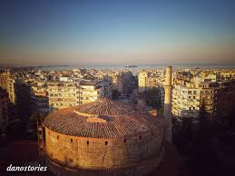
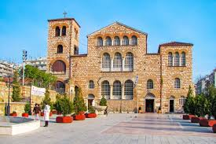
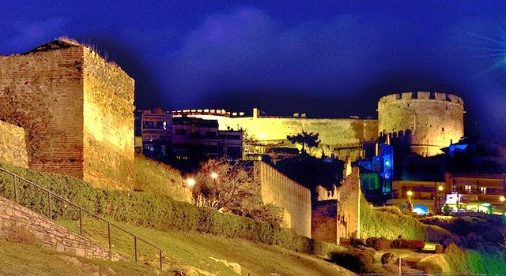

H Ροτόντα είναι θολωτό κυκλικό κτίσμα του 4ου αιώνα στη Θεσσαλονίκη, παρόμοιο με το Πάνθεον της Ρώμης. Η αρχική χρήση του δεν είναι γνωστή αλλά διατυπώθηκαν ως τώρα διάφορες υποθέσεις: ότι υπήρξε ναός του Διός, ή των Καβείρων, ότι κατασκευάστηκε από τον Καίσαρα Γαλέριο ως μαυσωλείο του, ή ως αίθουσα του θρόνου στο ανακτορικό συγκρότημα. Λόγω της μη χρήσης του, μετατράπηκε επί βυζαντίου σε χριστιανικό ναό των Ασωμάτων Δυνάμεων και μετά την Απελευθέρωση της Θεσσαλονίκης, το 1912, αφιερώθηκε στον Άγιο Γεώργιο.

Ο Άγιος Δημήτριος (280 - 306) είναι άγιος της Ορθόδοξης και της Ρωμαιοκαθολικής Εκκλησίας και πολιούχος της Θεσσαλονίκης. Σύμφωνα με τα αγιολογικά κείμενα, ο Δημήτριος έζησε και μαρτύρησε στη Θεσσαλονίκη επί Διοκλητιανού. Λόγω προβλημάτων της αγιολογικής παράδοσης, για τις απαρχές και την προέλευση της λατρείας του έχουν διατυπωθεί από το 19ο αιώνα διάφορες θεωρίες, επικρατέστερη των οποίων μεταξύ των μελετητών είναι ότι δεν υπήρξε Δημήτριος που μαρτύρησε στη Θεσσαλονίκη, αλλά η λατρεία του προέρχεται από το Σίρμιο της Παννονίας. Σημαντικό κέντρο της λατρείας του είναι η Θεσσαλονίκη, όπου τιμάται από την πρωτοχριστιανική περίοδο και έχει ανεγερθεί βασιλική προς τιμήν του. Κατά τους βυζαντινούς χρόνους τιμώταν ως θαυματουργός προστάτης της πόλης από εχθρούς πολιορκητές της και κατά την εορτή του πραγματοποιούνταν θρησκευτική και εμπορική πανήγυρις, τα Δημήτρια, που αναβίωσαν τη δεκαετία του 1960 ως πολιτιστική διοργάνωση. Είναι ένας από τους λαοφιλέστερους αγίους της Ορθόδοξης Εκκλησίας, που εορτάζει τη μνήμη του στις 26 Οκτωβρίου.

Τα Κάστρα της Θεσσαλονίκης είναι ένα σύμπλεγμα τειχών, πύργων και οχυρώσεων με μοναδική αρχαιολογική, αρχιτεκτονική και ιστορική σημασία. Αυτό που λέμε σήμερα "Κάστρα της Θεσσαλονίκης" είναι μέρος μόνο της παλιάς οχύρωσης. Στην αρχική τους μορφή, τα τείχη και τα κάστρα της Θεσσαλονίκης περιέβαλλαν ολόκληρη την πόλη, συμπεριλαμβανομένης της πλευράς που βρέχεται από τη θάλασσα. Η σχεδίαση και η τεχνολογία των τειχών τα κάνει να μοιάζουν πολύ με τα βυζαντινά τείχη της Κωνσταντινούπολης, αν και βέβαια το μέγεθος διαφέρει. Οι πρώτες οχυρώσεις δημιουργήθηκαν με την ίδρυση της πόλης κατά τους ελληνιστικούς χώρους αλλά η σημερινή μορφή των κάστρων είναι στο μεγαλύτερο μέρος κατασκευή του 4ου μ.Χ. αιώνα.